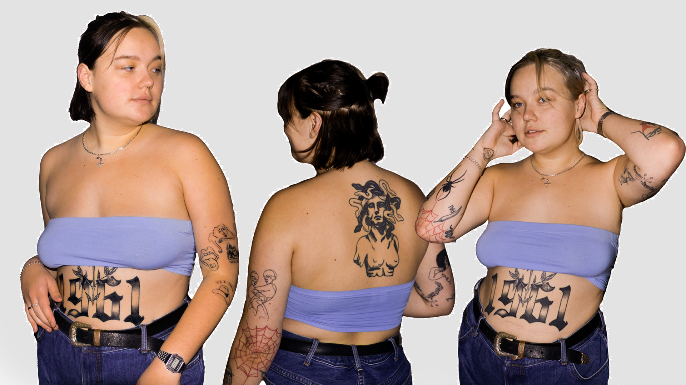

Præmis:
Tatoveringer som en del af ens identitet.
Log-line:
En ung pige fortæller om hendes foretrukne valg af kunst:
tatoveringer.
Resumé:
Temaet er tatoveringer som en del af ens identitet. Den
grundlæggende historie vi vil fortælle handler om Iben, som
efterhånden har mange tatoveringer i en ung alder. Vi vil gerne
undersøge hvad de betyder for hende, hvorfor hun har dem, og hvordan
hun føler andre ser hende ud fra hendes kropsudsmykning.
Filmen optages i:
Et varmt og personligt miljø - Ibens hjem.
Storyboard:
Establishment shot.
Introduktion til Iben.
Iben fortæller om hendes foretrukne valg af kunst: hendes
tatoveringer.
Videoer af hendes tatoveringer.
Afslutning på video.
Billeder af Iben

Website layout